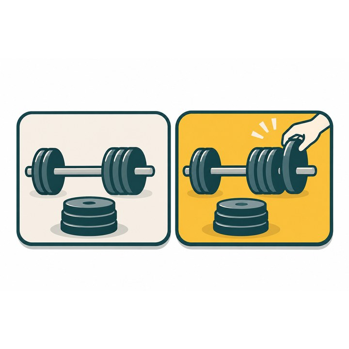

iPhone・iPad・Android の筋トレの記録
前回のとなりで、
今日のセットを。
筋トレのセットを、前回の同じ種目のセットのとなりで入れる記録のアプリです。入力欄は前回か直前のセットの値で埋まっていて、1押しで記録。入れたら休憩のタイマーが始まります。記録は端末の外に送りません。
App Store・Google Play で配信予定買い切りで全部の機能が使えます。月額・アプリ内課金・広告・アカウントはありません。

こんな困りごとのために
前回の重さを探すのが手間
種目を開くと、前回のセット（日付と、重さ×回数の並び）が今日の入力のとなりに出ます。［前回と同じ］［+2.5 kg］［+1 回］も1押し。
セットの合間は短い
入力欄ははじめから埋まっていて、［セットを入れる］の1押しで記録。休憩のタイマーが自動で始まります。
部位や種目を自分で決めたい
部位は足せて、名前も変えられます。入っている48の種目も全部直せます。記録の型は重さ×回数・回数だけ・時間・距離と時間から。
やっていない種目まで記録になる
メニューから始めても、記録に入るのは入れたセットだけ。セットの無い種目は、終えるときに外します。
数字で伸びを見たい
週の総ボリュームと、種目ごとの最高の重さ・推定1RM。グラフと同じ値を表の数字でも見られます。
記録が消えるのがこわい
セットは入れた瞬間に保存。消したセットは30日のあいだ戻せます。種目をしまっても、過去の記録は残ります。
できること
| 記録 | 重さ×回数（kg／lb）・回数だけ・時間・距離と時間（km／mi）。セットごとに推定1RM（1〜12回） |
|---|---|
| 休憩 | セットを入れると始まるタイマー（30秒〜5分・+15秒／−15秒）。終わりを通知で知らせることも（設定で入れたときだけ） |
| 決める | 部位ごとの「前回から◯日」・自分のメニュー。連続の日数は数えません |
| 見る | カレンダーと一覧・週の総ボリュームの棒・最高の重さと推定1RM の線・同じ値の表 |
| データ | 端末の中に保存（ゴミ箱は30日）・CSV の書き出しと読みこみ・アカウントなし・通信なし |
使い方・プライバシーポリシー・利用規約もご覧ください。